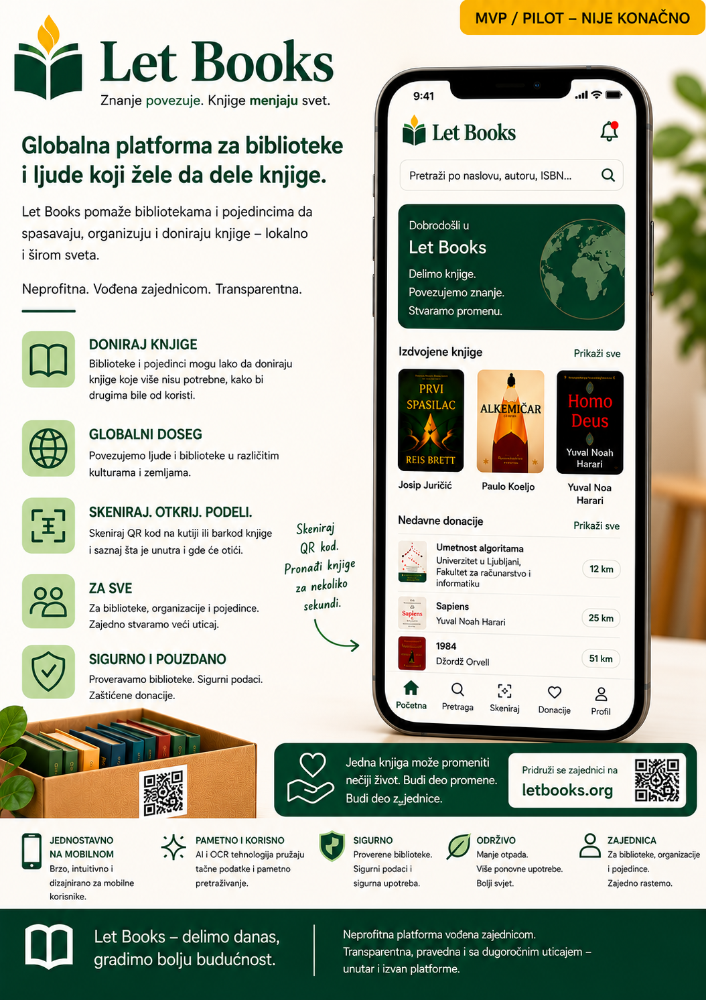

Napomena o ranoj alfa fazi
Dokumentacija, makete i opisani tokovi rada još su u ranoj alfa fazi. Sadržaj je AI-potpomognut i može sadržati netačnosti, privremene detalje ili buduće pravce razvoja.
Let Books pomaže ljudima, bibliotekama i budućim organizacijama domaćinima da popišu vredne knjige, pregledaju donacije i kasnije pronađu tačno one primerke koji su traženi.

Dokumentacija, makete i opisani tokovi rada još su u ranoj alfa fazi. Sadržaj je AI-potpomognut i može sadržati netačnosti, privremene detalje ili buduće pravce razvoja.
Jedan naslov može imati više fizičkih primeraka, svaki sa svojim stanjem, lokacijom i ishodom donacije.
Skenirajte kutiju, vidite sadržaj, brzo dodajte knjige i kasnije pripremite preuzimanje bez nagađanja.
Izvezite listu, prikupite odluke želi ili možda, vratite ih nazad i napravite listu preuzimanja po lokacijama.
Prvi uspešan tok rada mora biti praktičan, mobilan i upotrebljiv čak i bez dubljih integracija.
Odmah otvorite tačnu lokaciju na kojoj radite.
Fotografišite naslovnicu i po mogućstvu skenirajte ISBN.
Soba, polica i kutija ostaju vezane za svaki primerak.
Pripremite strukturisanu listu za biblioteku ili partnera.
Vratite statuse želi, možda i ne želi bez nagađanja po naslovu.
Tražene knjige grupišu se po stvarnim lokacijama.